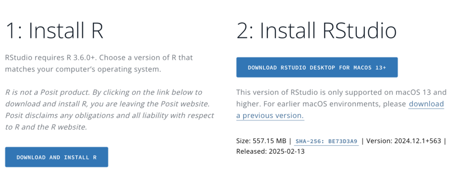
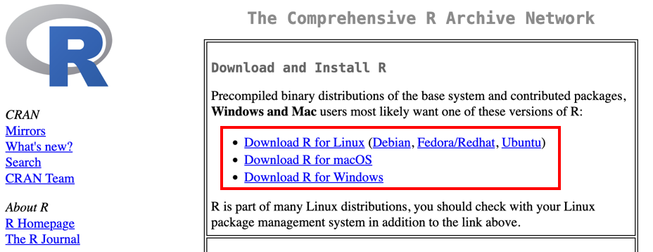
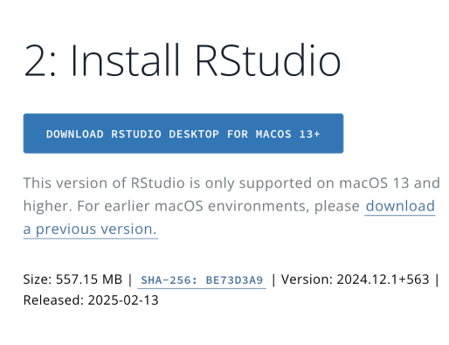
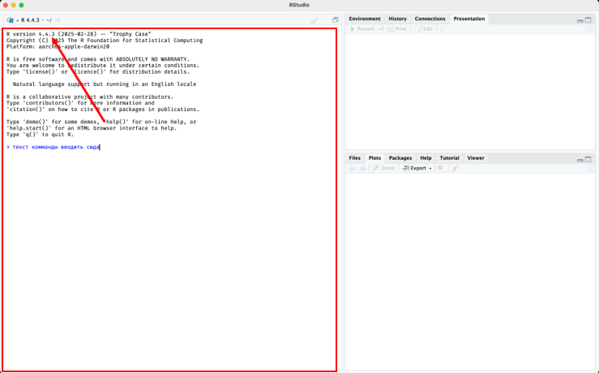
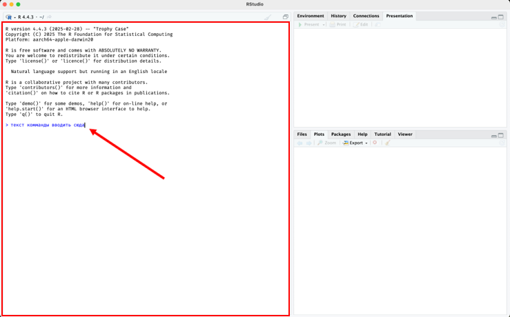
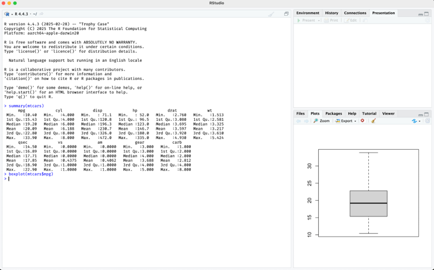
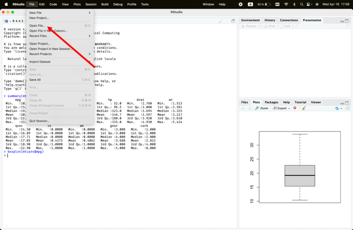
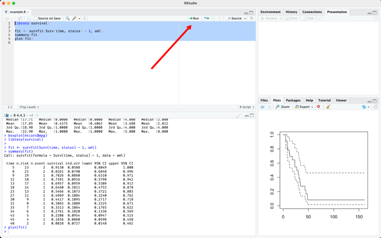
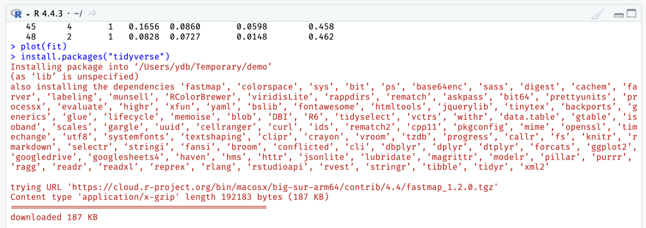
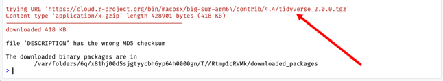

2 Установка
2.1 Установка R и RStudio
Перейдите по ссылке:
posit.co/download/rstudio-desktop
В середине страницы найдите раздел “Установка R и RStudio”
Нажмите DOWNLOAD AND INSTALL R

Установка R и RStudio
В открывшейся вкладке выберите из списка свою операционную систему

Установка R и RStudio
2.2 Установка RStudio
- Вернитесь или перейдите по ссылке:
posit.co/download/rstudio-desktop - Нажмите DOWNLOAD RSTUDIO DESKTOP
- Следуйте инструкциям установщика

Установка RStudio
2.3 Запуск RStudio
- Иконка R — запускает только консоль
- Иконка RStudio — запускает интерфейс (используем её)
Убедитесь, что установлена версия R 4.2.x, 4.3.x, 4.4.x или 4.5.x
Если версия другая — переустановите R по инструкции выше.

Проверка версии
2.4 Запуск команд в RStudio
Это — консоль для ввода команд.

Интерфейс
- Введите текст команды
- Нажмите Enter для запуска
Попробуйте:
Должен появиться график.

Команды в RStudio
2.5 Запуск файлов в RStudio
- Скачайте и откройте файл
survival-demo.R:
Верхнее меню → File → Open File - Выделите весь текст мышью
- Нажмите Run
Команды выполнятся в нижней консоли.

2.6 Установка пакетов
Пакеты могут устанавливаться долго — дождитесь окончания (например, до
tidyverse)
В консоли введите:
install.packages("tidyverse")

Установка пакетов
долго будут ставиться пакеты, пока не закончится на tidyverse

Установка пакетов